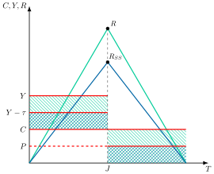
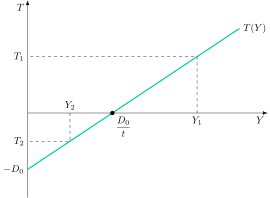
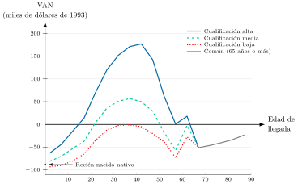
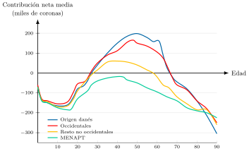

Apuntes para la oposición al Cuerpo de Diplomados Comerciales del Estado
19 El Estado del Bienestar y los instrumentos de redistribución y protección social. Medición e indicadores del impacto redistributivo.
19.1 Introducción  1'
1'
Según el último informe de Fedea (López Laborda et al. 2026) sobre distribución de impuestos para el año 2023, el presupuesto público redujo la desigualdad de la renta de mercado en España un 31,9 %. Además, más de la mitad de los hogares españoles fueron perceptores netos del Estado, al recibir en prestaciones públicas más de lo que aportaron vía impuestos.
Así, una de las mayores transformaciones que ha experimentado el sector público en los últimos 60 años en la mayoría de países desarrollados ha sido el cambio en las funciones que este ejerce, marcado por la mayor importancia concedida a la función distributiva:
El medio principal utilizado por el sector público para cumplir con esta función es el presupuesto, entendido como un programa de ingresos y de gastos públicos.
El resultado principal de dicha función es la construcción del Estado del Bienestar.
Por consiguiente, el objetivo del tema es analizar los instrumentos redistributivos del Estado de Bienestar, sus efectos y sostenibilidad a través del siguiente esquema:
Justificación.
Prestaciones económicas.
Provisión de bienes preferentes.
Impacto redistributivo.
19.2 Justificación1'30"
Comenzando con la justificación, la Economía del Bienestar muestra que las asignaciones Pareto-eficientes resultantes de un mercado perfectamente competitivo no tienen por qué ser las que maximicen el bienestar social. Es decir, la optimalidad de Pareto es una condición necesaria pero no suficiente para la maximización del bienestar.
El Segundo Teorema del Bienestar establece que, con preferencias y tecnologías convexas, cualquier asignación eficiente puede alcanzarse como equilibrio competitivo mediante una redistribución previa vía transferencias de suma fija, dejando después actuar a los mecanismos del mercado. Por tanto, puede alcanzarse otra solución eficiente que, además, maximice el bienestar social1.
Estado del Bienestar
De este modo, para garantizar su función distributiva, el Sector Público ha construido el Estado del Bienestar, que puede definirse como un conjunto de instrumentos redistributivos que el sector público utiliza para garantizar un cierto nivel de equidad y cobertura mínima de necesidades en la sociedad. No obstante, el sector público debe tratar de garantizar un equilibrio que no siempre es fácil de lograr: tiene que ser eficaz, eficiente y sostenible.
Pilares de la redistribución
Así, en los países desarrollados, la función redistributiva del sector público se suele diseñar desde una perspectiva socio-liberal basada en 3 pilares2:
Equidad horizontal: no discriminación entre iguales.
Equidad vertical: discriminación positiva entre diferentes (a favor del menos dotado).
Igualdad de oportunidades (que es diferente de igualdad de resultados).
Instrumentos
Respecto a los instrumentos, aunque el sector público tiene tanto instrumentos presupuestarios como no presupuestarios3, se opta por los primeros debido al alto coste de eficiencia de los segundos.
Distorsiones
Además, la mayor parte de la función redistribuidora del presupuesto se hace a través del gasto y no de los impuestos, pues la concepción moderna de la imposición (aportada fundamentalmente por la Nueva Macroeconomía Clásica) recomienda que esta sea neutral para evitar distorsiones en la toma de decisiones.
A continuación, se analizarán los 2 principales instrumentos de gasto del Estado de Bienestar: las prestaciones económicas y la provisión de bienes preferentes.
19.3 Prestaciones económicas 6'
Se trata de transferencias monetarias de libre disposición (pensiones, prestaciones por desempleo, prestaciones asistenciales, etc.). El receptor hace el uso que quiera de las mismas.
Rasgos generales
Comenzando con los rasgos generales, la clasificación de las prestaciones:
Según el tipo de cobertura:
Profesional (o bismarckiano): la cobertura se limita fundamentalmente a los asalariados. En puridad, el sistema propone una estricta proporcionalidad entre las cotizaciones y las prestaciones.
Universal, heredero del Informe Beveridge (1942), la cobertura se ofrece a toda la población.
Según el modo de financiación:
No contributivo (o asistencial): se financia con cargo a los Presupuestos Generales del Estado, sin exigir cotizaciones previas. Su principal ventaja es la contribución a la equidad y su principal inconveniente es la presión que ejerce sobre el déficit.
Contributivo: se financia a través de las cotizaciones de los afiliados.
Categorías de prestaciones
Asimismo, las prestaciones económicas pueden agruparse en 2 categorías:
Programas de sustitución de rentas: ofrecen prestaciones que compensan la pérdida de rentas como consecuencia de determinados acontecimientos (pensiones contributivas, prestaciones por desempleo, etc.). Suelen ser profesionales y contributivas.
Programas de reducción de la pobreza: ofrecen prestaciones que tratan de paliar situaciones de pobreza extrema, proporcionando unos ingresos mínimos a individuos cuyos ingresos son muy bajos o nulos (pensiones no contributivas, subsidios por desempleo, etc.). No exigen cotizaciones previas, se dirigen a quien acredita falta de recursos y se financian con impuestos generales.
Obligatoriedad de participación
Por otro lado, la obligatoriedad de participación en los programas contributivos se debe a 4 motivos:
Paternalismo: se basa en la creencia de que el Estado conoce mejor los beneficios de tener un seguro, pues los individuos suelen subestimar los riesgos de un acontecimiento y podrían no asegurarse ante éste.4
Información asimétrica: selección adversa. Las aseguradoras no conocen la probabilidad de que una persona pierda su puesto de trabajo, por lo que fijarán unas primas en función del riesgo medio, con lo que las personas de bajo riesgo no contratarán el seguro. Las aseguradoras recalcularán entonces al alza la prima, repitiéndose el proceso hasta que los individuos con menor riesgo son expulsados completamente del mercado de seguros.
Eficiencia: por la ley de los grandes números (risk pooling), cuanto mayor sea el número de asegurados con riesgos independientes, menor será el riesgo por asegurado, porque la pérdida media del grupo se vuelve casi predecible aunque no se sepa a quién afectará el siniestro.5
Externalidad negativa: una pobreza generalizada puede generar tensión social, inestabilidad, delincuencia, inseguridad, etc.
Justificación del carácter público
Además, existe justificación del carácter público de los programas contributivos. Así, la provisión pública de los programas contributivos se debe a 2 motivos:
Riesgos sociales. Se trata de riesgos que, de producirse, afectan a gran parte de la población, por lo que una aseguradora privada podría verse abocada a la quiebra (por ejemplo, desempleo). El sector público sí puede asegurar porque dispone de ingresos adicionales a las primas.
Equidad. La provisión pública asegura que los individuos pagarán en función de su renta, y no en función de su riesgo (que sería la variable clave para las aseguradoras privadas).
A continuación analizaremos las principales prestaciones económicas.
Pensiones de jubilación
Definición: prestación económica periódica que compensa la pérdida de la capacidad del trabajador para generar rentas laborales por vejez. Las pensiones constituyen un pilar fundamental dentro del Estado de Bienestar6.
Objetivos
Los sistemas de pensiones, entendidos como el conjunto de programas de transferencias de renta y de los correspondientes mecanismos financieros, persiguen fundamentalmente 3 objetivos:
Prevenir el riesgo de pobreza entre adultos de mayor edad.
Permitir el mantenimiento del estándar de vida después de la jubilación.
Promover la cohesión social.
Sistemas de pensiones
Las pensiones de jubilación pueden seguir 2 sistemas:
Capitalización: los trabajadores realizan contribuciones forzosas a una cuenta de ahorro de la cual el trabajador obtendrá su pensión cuando se jubile (ahorro forzoso, pero no redistribución). Sistema de Capitalización, actúa como un fondo privado de pensiones, donde el sector público invierte las cotizaciones, \(C\), recaudadas en un activo sin riesgo y, llegado el momento de la jubilación, se pagan las cotizaciones más los rendimientos que se hayan generado. El importe total disponible, \(A\), vendrá dado \[A=C\cdot\sum\limits_{t=0}^{J}\left(1+r\right)^{J-t} \tag{19.1}\] y dependerá fundamentalmente del rendimiento obtenido que viene dado por el tipo de interés.
De reparto (pay as you go): basado en un contrato implícito intergeneracional según el cual las prestaciones del período se cubren con las cotizaciones de ese mismo período (ahorro forzoso y redistribución intergeneracional). El sector público se compromete a pagar las pensiones futuras pero no el nivel de las mismas. La cuantía de la pensión media, \(P_{t}\), en cada momento será igual a los fondos disponibles, que serán el tipo de cotización, \(\tau\), por el salario medio, \(w_{t}\), y por el número de ocupados, \(L_{t}\), todo ello dividido entre el número de jubilados, \(J_{t}\): \[P_{t}=\dfrac{\tau\cdot w_{t}\cdot L_{t}}{J_{t}} \tag{19.2}\]
¿Cuál elegir?
La elección entre un sistema de capitalización y uno de reparto depende, en gran medida, de factores demográficos y económicos:
En un sistema de reparto, el rendimiento de las pensiones está vinculado al crecimiento de la masa salarial y del empleo, descontando el crecimiento del número de jubilados. Es decir, la pensión media crece más cuanto más rápido aumenten los ingresos por cotizaciones respecto al número de beneficiarios.
En un sistema de capitalización, el rendimiento depende exclusivamente del tipo de interés que generan las inversiones realizadas con las cotizaciones acumuladas.
Por tanto, el sistema de reparto será más ventajoso que el de capitalización siempre que la siguiente expresión se cumpla:
\[\dfrac{\dot{w}}{w}+\dfrac{\dot{L}}{L}-\dfrac{\dot{J}}{J}>r \tag{19.3}\] donde \(\frac{\dot{w}}{w}\) es la tasa de crecimiento de los salarios, \(\frac{\dot{L}}{L}\) la del empleo, \(\frac{\dot{J}}{J}\) la del número de jubilados, y \(r\) el tipo de interés. Esta desigualdad refleja que, si el crecimiento económico y demográfico supera el rendimiento financiero, el sistema de reparto ofrece una rentabilidad mayor que la capitalización y puede mejorar el bienestar de todas las generaciones.7
Efectos sobre crecimiento y ahorro
Bajo el sistema de reparto, los agentes pueden modificar sus decisiones de ahorro por distintos motivos:
Efecto sustitución de la riqueza: los individuos perciben que las cotizaciones a la Seguridad Social se transformarán en renta futura, lo que les lleva a reducir su ahorro privado. Sin embargo, dado que en los sistemas de reparto las cotizaciones no se acumulan, sino que se destinan directamente al pago de pensiones actuales, este comportamiento puede provocar una disminución del ahorro nacional.
Efecto jubilación: las pensiones públicas pueden inducir a jubilarse antes, y un periodo de jubilación más largo, financiado con menos años de trabajo, obliga a ahorrar más durante la vida activa.8 Además, la incertidumbre sobre la cuantía de la pensión futura puede elevar el ahorro por precaución, especialmente si se perciben riesgos en la sostenibilidad del sistema.
Efecto herencia: como el sistema de reparto transfiere renta de los hijos, que cotizan, a los padres, que cobran la pensión, los individuos que desean dejar un legado a sus descendientes tienden a incrementar su ahorro para compensarles.
Análisis gráfico
Gráficamente, en un plano de consumo, renta y riqueza a lo largo del tiempo como el de la Figura 19.1, se analizará el efecto sobre el ahorro de los sistemas de reparto y capitalización:
Se parte de un modelo de ciclo vital, donde los agentes desean suavizar el consumo, \(C\), a lo largo de su vida, por lo que distribuirán el ahorro para conseguirlo.
Recibirán una renta exógena, \(Y\), que consumirán y ahorrarán, por lo que acumularán riqueza, \(R\), hasta que se jubilen en el momento \(J\).
Cuando se jubilan, al no recibir la renta laboral, comenzarán a desahorrar, por lo que irán disminuyendo paulatinamente la riqueza hasta el final de sus días.
En un sistema de reparto, el proceso es el mismo pero mientras trabaja cotizará, así que la renta será menor, \(Y-\tau\), ahorrando menos hasta el momento \(J\).
En el momento de jubilarse no solo consumirá lo ahorrado, sino que recibirá una pensión, \(P\), gracias a sus cotizaciones mientras trabajaba.
Así, bajo un sistema de reparto el ahorro nacional disminuye respecto al sistema de capitalización.

Concepto de eficiencia dinámica
Esta menor acumulación de ahorro y capital bajo el sistema de reparto no es necesariamente negativa: su efecto sobre el bienestar depende de si la economía se encontraba o no en una situación de eficiencia dinámica.
La eficiencia dinámica es la situación en la que no es posible aumentar el consumo de una generación sin reducir el de otra, lo que exige que el capital por trabajador no supere al de la Regla de Oro. Según la Regla de Oro del modelo de Solow, existe un nivel de capital por trabajador que maximiza el consumo por trabajador sostenible en el largo plazo.
Ahora bien, esta conclusión no es general: depende de si la economía se encuentra o no en un régimen de sobreacumulación, es decir, si el nivel de capital por trabajador supera al de la Regla de Oro. Solo en ese caso, una reducción del ahorro agregado como la que provoca el sistema de reparto frente al de capitalización mejora el bienestar:
En un sistema de capitalización, el ahorro agregado puede situarse por encima del nivel eficiente si la economía entra en sobreacumulación, en cuyo caso deja de ser dinámicamente eficiente.
En cambio, en una economía en sobreacumulación, el sistema de reparto, al reducir el ahorro privado, acerca la economía al nivel de capital de la Regla de Oro y mejora el bienestar.
La pregunta relevante, por tanto, es si las economías desarrolladas se encuentran realmente en régimen de sobreacumulación. Abel, Mankiw, Summers y Zeckhauser (1989) contrastan la condición de eficiencia dinámica para Estados Unidos y el resto de países del G7 y concluyen que estas economías son, en general, dinámicamente eficientes, ya que la inversión bruta no supera de forma sistemática a los beneficios del capital. Sin embargo, este resultado no está exento de controversia: Blanchard (2019), en su discurso presidencial ante la American Economic Association, sostiene que la eficiencia dinámica debe evaluarse con el rendimiento del capital productivo y no con el tipo de interés libre de riesgo, lo que matiza el criterio original. En la misma línea, Geerolf (2018) recalcula el criterio de AMSZ incorporando las rentas de la tierra –excluidas del capital productivo en el cálculo original– y no encuentra evidencia de eficiencia dinámica en ninguna de las economías avanzadas analizadas, señalando además una sobreacumulación de capital inequívoca en Japón y Corea del Sur.
Por tanto, el argumento de la sobreacumulación no puede descartarse como una mera posibilidad teórica: sigue siendo objeto de debate empírico abierto entre la literatura clásica (Abel et al. 1989) y revisiones más recientes (Blanchard 2019; Geerolf 2018) que cuestionan si las economías desarrolladas son realmente dinámicamente eficientes.
Problemas y reformas
El principal desafío de los sistemas de pensiones en países desarrollados sigue siendo su sostenibilidad, especialmente en regímenes de reparto o mixtos. Las causas son múltiples:
El desempleo reduce las cotizaciones;
La devaluación salarial limita la base contributiva;
El envejecimiento poblacional incrementa el número de pensionistas (se prevén 15 millones en 2050)9;
El efecto sustitución de las pensiones, es decir, la sustitución de las pensiones que se extinguen por altas de mayor cuantía, eleva el gasto, ya que las nuevas pensiones son un 30% superiores a las que se extinguen;
La robotización transforma la base productiva, reduciendo el empleo asalariado.
España ha abordado el problema desde el lado del gasto con reformas en 2011 y 2013: aumento de la edad de jubilación, ampliación del periodo de cálculo, y un factor de sostenibilidad y un índice de revalorización que la Ley 21/2021 derogó. En 2025, se ha revalorizado un 2,8% la pensión contributiva y se han endurecido los requisitos para la jubilación anticipada. Por el lado de los ingresos, desde 2023 se aplica el Mecanismo de Equidad Intergeneracional (MEI), una cotización adicional que sube del 0,6% al 1,2% del salario hasta 2029, y desde 2025 la cuota de solidaridad sobre los salarios que superan la base máxima de cotización, que además sube de forma gradual. Otras propuestas son revisar bonificaciones y fomentar planes privados complementarios (modelo británico o mochila austriaca).
También se propone permitir la compatibilidad plena entre pensión y empleo, incentivar la prolongación de la vida laboral y endurecer el acceso a la jubilación anticipada.
Cuentas nocionales
Además, se plantea implantar un sistema de cuentas nocionales, como en Suecia o Italia, que simula cuentas individuales vinculadas a las cotizaciones y a la esperanza de vida. Este modelo combina reparto y capitalización, mejora la equidad intergeneracional y refuerza la sostenibilidad del sistema. Las cuentas nocionales combinan elementos del reparto y la capitalización: simulan cuentas individuales como en la capitalización, pero sin acumular fondos reales, ya que se financian colectivamente como en el sistema de reparto.
Prestaciones por desempleo
Las prestaciones por desempleo son uno de los pilares del Estado del Bienestar en los países desarrollados10. Se definen como ayudas económicas periódicas destinadas a compensar la pérdida de ingresos por desempleo. Su existencia se justifica por razones de equidad, paternalismo y para corregir fallos de mercado como la selección adversa.
Modelos de búsqueda de empleo
Desde la perspectiva de los modelos de búsqueda de empleo, estas prestaciones favorecen un mejor emparejamiento entre vacantes y trabajadores, lo que contribuye a mejorar la productividad agregada.
Problemas
No obstante, presentan varios problemas.
Por un lado, pueden generar una “trampa de pobreza”: como la prestación se pierde al encontrar empleo, aceptar un trabajo apenas aumenta la renta disponible, lo que equivale a un tipo marginal implícito cercano al 100% y eleva el salario de reserva. Además, su financiación reduce el salario neto de los ocupados, dado que las cotizaciones sociales suelen recaer sobre los trabajadores, y el desempleo prolongado deteriora el capital humano y la empleabilidad.
Por otro lado, existe el riesgo de fomentar la economía sumergida, ya que algunos desempleados optan por trabajos no declarados para no perder la ayuda.
Trade-off entre eficiencia y equidad
El diseño de los programas de desempleo enfrenta un equilibrio complejo entre eficiencia y equidad. La tasa de reposición, definida como \(\frac{w^{*}}{w}\cdot100\), donde \(w^{*}\) es la prestación por desempleo y \(w\) el salario anterior, representa el porcentaje del salario anterior cubierto por la prestación. Si esta tasa es elevada, el salario de reserva también lo será, lo que puede desincentivar la búsqueda de empleo y prolongar el tiempo en paro. Para evitar este efecto, es esencial que el salario ofrecido en el mercado supere significativamente al ingreso por desempleo. El objetivo no debe ser solo proteger al desempleado, sino fomentar su reincorporación laboral.
Soluciones
Entre las soluciones propuestas destacan:
El rediseño de las prestaciones (ajustando duración y cuantía, o adaptándolas al ciclo económico) y el refuerzo de políticas activas de empleo, como formación obligatoria o incentivos fiscales a empresas que contraten desempleados.
Según de Kerchove, Gabszewicz y Gérard-Varet (1995), los subsidios al empleo generan mayor bienestar que las prestaciones pasivas.
También se plantea recurrir a empresas privadas de colocación para mejorar la eficiencia del sistema.
Como innovación, la mochila austriaca, introducida en Austria en 2003, es un sistema que sustituye la indemnización por despido por una cuenta individual a la que el empleador aporta cada mes un porcentaje del salario, en torno al 1,5% (Brogueira de Sousa et al. 2019), y que el trabajador conserva al cambiar de empleo. Al no perder lo acumulado al cambiar de empresa, fomenta la movilidad laboral, y al igualar el coste del despido entre contratos reduce la dualidad del mercado laboral. Complementa, sin sustituirla, la prestación por desempleo, y lo no utilizado puede destinarse a la jubilación.
En conjunto, el objetivo no debe ser solo proteger al desempleado, sino fomentar su reincorporación laboral. Convertir el seguro de desempleo en un verdadero seguro de empleo es clave para lograr un sistema más justo, dinámico y sostenible.
Programas de reducción de la pobreza
Además de las prestaciones contributivas que sustituyen rentas laborales, los sistemas de Seguridad Social incluyen prestaciones no contributivas destinadas a garantizar una renta mínima a personas con ingresos nulos o muy bajos. Estas ayudas responden a objetivos de equidad, redistribución y lucha contra la pobreza.
Tipos
Las prestaciones no contributivas suelen replicar las contributivas (jubilación, desempleo, viudedad, invalidez, dependencia), pero se dirigen a quienes no cumplen los requisitos de cotización.
Problemas
Sin embargo, presentan problemas similares a los subsidios por desempleo: generan la llamada “trampa de pobreza” (cada euro adicional ganado reduce la ayuda en casi un euro, lo que desincentiva trabajar) y fomentan la economía sumergida. Además, no abordan la raíz del problema, ya que no mejoran la empleabilidad ni la capacidad de generar ingresos.
Solución
Una solución es complementar estas prestaciones con programas de apoyo: incentivos fiscales a la contratación de colectivos vulnerables, formación profesional o estímulos a la educación.
Renta básica universal
Una propuesta más ambiciosa es la renta básica universal (RBU), que consiste en otorgar a cada ciudadano una cantidad periódica de dinero sin condiciones. Sus ventajas incluyen equidad, la garantía de un mínimo vital incluso para quien no fue previsor y reducción de las externalidades negativas de la pobreza. Además, responde a tres desafíos clave:
Automatización: La Cuarta Revolución Industrial amenaza millones de empleos poco cualificados. El reciclaje laboral es lento y, en muchos casos, inviable. La RBU evitaría la exclusión social de amplios sectores. Finlandia probó este modelo entre 2017 y 2018, pagando 560 €/mes a 2.000 personas. El experimento mejoró el bienestar, aunque no la empleabilidad11.
Simplificación administrativa: Al ser universal, la RBU podría sustituir el complejo entramado de ayudas actuales, facilitando su gestión.
Eliminación de la trampa de pobreza: La RBU no se retira al encontrar empleo, lo que incentiva la actividad laboral legal.
Problemas renta básica universal
No obstante, plantea desafíos importantes:
Efecto llamada: Podría atraer migración económica, comprometiendo la sostenibilidad del sistema.12
Financiación: Su coste sería elevado, salvo que sustituya al sistema actual mediante un “impuesto negativo sobre la renta” (Friedman 1962; Tobin et al. 1967), combinando la RBU con impuestos progresivos.
Gráficamente, en un plano de impuestos y renta como el de la Figura 19.2, se representa la función impositiva \(T\left(Y\right)=t\cdot Y-D_{0}\), donde \(D_{0}\) es el dividendo social que recibe todo ciudadano y \(t\) el tipo impositivo. En este contexto, si la renta supera el umbral \(D_{0}/t\), como en \(Y_{1}\), pagará un impuesto neto como \(T_{1}\), y si es menor, recibirá una transferencia neta como \(T_{2}\).
Alternativamente, podría financiarse con una subida de impuestos, lo que implicaría distorsiones, pero también beneficios como mayor transparencia y afloramiento de empleo sumergido.En definitiva, la RBU representa una transformación profunda del Estado del Bienestar, con potencial para reducir la pobreza estructural, aunque requiere un diseño fiscal riguroso y consenso político amplio.

19.4 Provisión de bienes preferentes5'
Hasta ahora hemos analizado las prestaciones económicas del Estado del Bienestar, junto con sus desafíos y posibles soluciones. Ahora abordamos otra vía clave para garantizar equidad y redistribución: la provisión de bienes preferentes.
Concepto
Los bienes preferentes son bienes privados que el sector público provee o subvenciona porque considera que, si cada individuo decidiera por sí solo, se consumirían en una cantidad inferior a la socialmente deseable. Este concepto es dinámico y depende del consenso social sobre la dignidad humana y el rol del Estado. Sin embargo, existe acuerdo generalizado en que sanidad, educación y vivienda deben considerarse bienes preferentes. En España, su carácter prioritario está respaldado por la Constitución.
Justificación
La intervención pública en estos ámbitos se justifica por múltiples razones: fallos de mercado, búsqueda de eficiencia, criterios de equidad, motivaciones políticas y la necesidad de corregir decisiones individuales que podrían ser perjudiciales para el bienestar colectivo.
Sanidad
La sanidad se define como el conjunto de servicios destinados a preservar o recuperar la salud de la población, incluyendo atención médica y dispensación de medicamentos. Su provisión pública se justifica por razones de equidad (nadie debería quedar excluido por falta de recursos), paternalismo (protección de los menos precavidos), externalidades negativas (como epidemias o baja productividad) y problemas de selección adversa en mercados con información asimétrica.
Modelos de provisión
Existen dos grandes modelos de provisión pública:
Modelo de Seguridad Social (modelo Bismarck)13: Profesional, cubre a trabajadores y sus familias. Se financia mediante cotizaciones sociales proporcionales a la renta. Ventajas: mayor concienciación sobre el coste y contención del gasto. Ejemplos: Alemania, Suiza.
Servicio Nacional de Salud (SNS, modelo Beveridge)14: Universal, cubre a todos los residentes legales. Se financia con impuestos generales. Ventajas: mayor equidad y redistribución. Ejemplos: España (desde la Ley General de Sanidad de 1986), Reino Unido, Suecia, Italia.
Modelos de producción
La producción de servicios sanitarios puede ser pública o privada, incluso dentro de sistemas de provisión pública:
Producción privada: El paciente acude a centros privados, pero el Estado cubre total o parcialmente el coste. Ventajas: libertad de elección, competencia entre profesionales, mayor visibilidad del coste. Ejemplo: Francia.
Producción pública: El Estado construye infraestructuras, contrata personal y presta directamente el servicio. Ejemplo: España.
Problemas identificados
Producción privada:
Incentivos perversos por demanda inducida (decidida por médicos).
Pérdida de control del gasto público.
Desabastecimiento en zonas rurales o poco rentables.
Producción pública:
Ineficiencia por falta de competencia y presión del mercado.
Listas de espera, sobrecostes y calidad variable.
Asignación automática de centro y médico, aunque algunas regiones como Madrid han implementado el modelo de “área única”15 para permitir elección.
Problemas generales:
Envejecimiento poblacional: Aumenta la demanda y el gasto sanitario.
Demanda excesiva: Por percepción nula del coste en el momento de uso, que genera riesgo moral, porque el paciente asegurado consume más servicios de los que pagaría de su bolsillo.
Copago: Introducido como posible solución para racionalizar el uso. En España, el sistema se reformó en 201216, afectando especialmente a pensionistas. Sin embargo, el copago puede ser regresivo, inefectivo (por la inelasticidad de la demanda) y contraproducente si retrasa tratamientos.
Gasto farmacéutico
España destina cerca del 19% del gasto sanitario a medicamentos, por encima del 15% de Alemania y de la media de la OCDE (16%). Para reducirlo se han adoptado medidas como:
Centralización de compras.
Prescripción por principio activo (genéricos).
Ajuste del número de unidades por envase.
Reformas en el copago farmacéutico desde 2012.
Educación
La intervención pública en educación se justifica por múltiples razones:
Externalidades positivas: las externalidades positivas que genera (como mayor productividad, cohesión social o innovación) provocan que, en ausencia de intervención, se infraproduzca17.
Mercados de capital imperfectos, dificultan que individuos con alto potencial puedan financiar su formación.
Equidad: desde una perspectiva de equidad, la Teoría del Capital Humano de Becker (1964) señala que la educación incrementa la productividad y los salarios; si solo los más ricos acceden a ella, la desigualdad se acentúa.
Modelos de provisión
En España coexisten la provisión pública y privada. Dentro de la pública, la producción puede ser también privada, como ocurre en los colegios concertados.
Educación obligatoria: Desde los 6 hasta los 16 años, la enseñanza es obligatoria y gratuita desde los 3 años. En el curso 2016/2017, el 68% de los alumnos asistía a centros públicos, el 26% a concertados y el 6% a privados. España es uno de los países europeos con menor proporción de alumnos en escuelas puramente públicas.
Educación universitaria: El 87% de los estudiantes cursa estudios en universidades públicas, donde se paga una matrícula que cubre aproximadamente el 20% del coste. Las privadas concentran más alumnos en áreas como ciencias de la salud.
Retos y propuestas
Primaria y secundaria: El debate gira en torno a si el Estado debe apostar por centros públicos o concertados. Aunque el gasto por alumno es menor en los concertados, esto se explica por factores como mayor número de alumnos por clase, menores salarios docentes y menor presencia de estudiantes con necesidades especiales. Además, la escuela pública garantiza cobertura territorial, incluso en zonas poco rentables.
La solución pasa por mantener ambos modelos, pero con reformas:
Introducir más competencia en la pública (por ejemplo, rankings ajustados por contexto socioeconómico).
Reforzar el control estatal en la concertada (evitar selección de alumnos o cuotas excluyentes).
Universitaria:
Combatir la regresividad de las tasas con precios ajustados a la renta y más becas.
Mejorar eficiencia mediante préstamos, tasas más altas en segundas matrículas y contabilidad de costes.
Fomentar la colaboración con el sector privado para adaptar la oferta formativa al mercado laboral.
Abordar la sobrecualificación incentivando la formación profesional, clave para cubrir vacantes en sectores técnicos y especializados.
Vivienda
El acceso a una vivienda digna es un pilar fundamental del Estado del Bienestar, justificado por razones de equidad y por las externalidades positivas que genera, como la reducción de la delincuencia o la mejora de la cohesión social.
Oferta y demanda
El sector público puede intervenir para facilitar el acceso a la vivienda desde dos vías:
Por el lado de la demanda: mediante incentivos fiscales a la compra o ayudas directas al arrendatario. Sin embargo, los incentivos a la propiedad pueden ser contraproducentes si la oferta es inelástica, ya que benefician principalmente a promotores y encarecen el mercado. Además, fomentan la inmovilidad laboral, agravando el paro friccional.
Por el lado de la oferta: a través de la construcción de viviendas de protección oficial, el aumento del suelo urbanizable o incentivos fiscales a los arrendadores para dinamizar el mercado del alquiler.
Además, las políticas públicas deben considerar la eficiencia energética y funcional de los edificios, promoviendo construcciones sostenibles que reduzcan el impacto ambiental y los costes a largo plazo.
Una estrategia equilibrada entre propiedad y alquiler, junto con una planificación urbana inclusiva, es clave para garantizar el derecho a la vivienda en contextos de creciente desigualdad y presión demográfica.
Ejemplos en España
El Plan 2022–2025 introdujo el Bono Alquiler Joven, impulsó la rehabilitación energética mediante fondos europeos y fomentó la colaboración con entidades sociales para ampliar el parque de vivienda asequible. Ambos planes reflejan una apuesta por equilibrar propiedad y alquiler, mejorar la eficiencia energética y garantizar el acceso a vivienda digna en todo el territorio.
Como proyecto, el Plan Estatal de Vivienda 2026–2030 triplicará la inversión pública hasta 7.000 millones, consolidará un parque público de vivienda asequible con calificación permanente, reforzará la rehabilitación en zonas rurales y creará una base de datos transparente de precios.
Otros bienes preferentes
Además de sanidad, educación y vivienda, existen otros bienes que, por su impacto en la equidad y el bienestar colectivo, pueden considerarse preferentes en el marco del Estado del Bienestar.
Seguridad ciudadana es un bien esencial que garantiza la integridad física y la convivencia pacífica. Su provisión pública responde a la necesidad de proteger a todos los ciudadanos, especialmente a los más vulnerables, frente a riesgos que no podrían afrontar individualmente.
Justicia cumple una función redistributiva y de garantía de derechos. El acceso universal a la tutela judicial efectiva, consagrado en el artículo 24 de la Constitución Española, evita que la resolución de conflictos dependa del poder adquisitivo, reforzando la cohesión social y la confianza institucional.
Medioambiente se ha consolidado como bien preferente por sus externalidades positivas sobre la salud, el desarrollo sostenible y la calidad de vida. La protección ambiental no solo beneficia a las generaciones presentes, sino que preserva recursos para las futuras, lo que justifica la intervención pública.
Conectividad digital, en el contexto actual, se ha convertido en un requisito básico para el acceso a la información, la educación, el empleo y la participación democrática. La brecha digital reproduce desigualdades sociales, por lo que garantizar el acceso universal a internet y a competencias digitales es ya una prioridad política.
Cultura es un vehículo de desarrollo personal, integración social y participación ciudadana. Su acceso equitativo permite combatir la exclusión, fomentar el pensamiento crítico y preservar la identidad colectiva.
19.5 Impacto redistributivo6'
El sector público desempeña un papel clave en la redistribución de la renta, tanto a través de los ingresos como del gasto:
Un sistema impositivo progresivo —donde quienes tienen más contribuyen proporcionalmente más— potencia la capacidad redistributiva del Estado.
Por otro lado, el gasto público orientado a servicios sociales, transferencias y políticas inclusivas puede reducir las brechas económicas.
La eficacia de esta redistribución se refleja en indicadores como el índice de Gini, que mide el grado de desigualdad: cuanto más bajo es su valor, menor es la desigualdad que queda tras la intervención pública.
Índice de Gini
El Índice de Gini es una medida de desigualdad en la distribución de la renta o riqueza dentro de una población. Se basa en la curva de Lorenz, que representa gráficamente el porcentaje acumulado de renta que posee cada porcentaje acumulado de población, ordenada de menor a mayor renta. El índice se calcula como el área entre la curva de Lorenz y la línea de perfecta igualdad, dividida por el área total bajo esa línea. Su valor oscila entre 0 y 1: un Gini de 0 indica igualdad perfecta (todos tienen la misma renta), mientras que un Gini de 1 representa desigualdad extrema (una sola persona concentra toda la renta). Aunque no mide pobreza directamente, es útil para comparar niveles de desigualdad entre países o a lo largo del tiempo, como recoge la Figura 19.3.
A pesar de la relevancia y el peso del gasto público en los presupuestos fiscales, su análisis desde una perspectiva distributiva es relativamente reciente y aún limitado. Tradicionalmente, la atención se ha centrado en la incidencia distributiva de los ingresos públicos, debido en parte a las dificultades metodológicas para definir y medir el impacto del gasto.
Enfoques de gasto
En este contexto, De Wulf (1981) presentó cuatro enfoques principales centrados en el gasto exclusivamente:
Incidencia impacto: asigna el gasto público a quienes lo perciben directamente.
Incidencia normativa o legal: analiza en beneficio de quién se realizan los gastos, según su diseño institucional.
Incidencia sobre precios relativos: estudia cómo el gasto público afecta los precios de los factores y productos, alterando la distribución indirectamente.
Incidencia del beneficio: evalúa el efecto del gasto sobre el bienestar de los beneficiarios, en términos de utilidad percibida.
Identificación de beneficiarios
El enfoque más sencillo consiste en identificar a los beneficiarios directos y asumir que solo ellos mejoran su bienestar. Sin embargo, este método presenta dos limitaciones:
Equilibrio general: no considera que el GP también beneficia a quienes participan en su provisión (profesores, personal sanitario, funcionarios, etc.).
Externalidades: muchos gastos generan efectos positivos sobre terceros, como ocurre con la sanidad o la educación pública.
Beneficio del gasto entre individuos
Para distribuir el beneficio del gasto entre unidades individuales, se distingue entre:
Gastos divisibles: bienes privados provistos por el sector público, como la sanidad o las transferencias monetarias. El beneficio se imputa directamente al consumidor.
Gastos no divisibles: bienes públicos que benefician al conjunto de la sociedad, como la defensa, la justicia o las infraestructuras, sin un beneficiario identificable.
Evidencia empírica para España
El Décimo Informe del Observatorio de FEDEA (López Laborda et al. 2026) cuantifica el impacto distributivo de impuestos y prestaciones sobre los hogares españoles en 2023, con especial énfasis en el efecto del gasto público. La renta de mercado ampliada creció un 8,7 %, aumentando ligeramente su desigualdad (Gini) de 0,5601 a 0,563618. Sobre ese horizonte, el estudio analiza prestaciones monetarias, sanidad y educación, y la carga fiscal.
Prestaciones monetarias
Las prestaciones monetarias (pensiones, desempleo, invalidez, asistencia social y ayudas diversas) aumentaron un 6,4 % en 2023, aunque su peso relativo en la renta bruta cayó al 20,3 % (0,3 puntos menos que en 2022):
Su efecto redistributivo, medido por el índice de Reynolds y Smolensky (1977), corrigió un 23,1 % de la desigualdad previa, frente al 23,9 % en 2022.
Índice de Gini tras prestaciones monetarias: 0,4333
Las pensiones de jubilación aportaron el 15,3 % de esa corrección, seguidas de supervivencia (4,0 %), desempleo (2,1 %) e invalidez (1,7 %).
Sistema fiscal
El sistema fiscal, con un tipo medio efectivo del 35,5 % de la renta bruta, redujo la desigualdad en un 1,55 %, frente al 2,65 % de 2022.
El IRPF, con un tipo medio del 10,4%, sigue siendo la principal herramienta redistributiva, aunque su capacidad cayó del 4,88 % al 4,42 %.
Índice de Gini tras impuestos: 0,4266
El Impuesto sobre Sociedades, imputado solo a accionistas residentes, elevó su tipo medio del 0,9 % al 1,1 % de la renta bruta, mientras que patrimonio y especiales apenas influyeron.
Las cotizaciones sociales aumentaron la desigualdad en 1,86 % (frente al 0,85 % de 2022).
Gasto en especie
El gasto en especie de sanidad y educación completó la redistribución: su peso en la renta bruta se situó en el 8,7 % (sanidad) y el 5,2 % (educación), y redujo la desigualdad un 10,0 % (8,5 % sanidad, 3,0 % educación).
Sanidad pública benefició al 100 % de hogares, con subsidios medios efectivos del 31,6 % para el primer quintil y apenas 1,3 % para el tramo más alto.
En educación, los hogares del primer quintil recibieron subsidios del 12,1 %, frente al 0,9 % del último centil.
Índice de Gini tras gasto en especie: 0,3838
Total combinado
Combinando impuestos, prestaciones monetarias y en especie, la intervención pública disminuye la desigualdad de la renta de mercado en un 31,9 %.
Del total de esa corrección, el 72,4 % procede de las prestaciones monetarias, el 23,8 % de sanidad y educación, y solo el 3,7 % de la imposición.
La redistribución neta muestra que el 60 % de hogares de menores ingresos (tres primeros quintiles) son beneficiarios netos, con subsidios efectivos que van del 81,5 % de su renta bruta en el primer quintil al 14,9 % en el tercero.
Los dos quintiles superiores son contribuyentes netos: del –4,6 % para el cuarto quintil al –23,1 % para los centiles 91-99, con el centil más rico (el 1 % superior) en –19,7 %.
Índice de Gini final (tras todas intervenciones): 0,3838
Índice de Gini ajustado por ciclo vital
Una aproximación preliminar desde la perspectiva de ciclo vital, que ajusta el índice de Gini por edad del sustentador, revela menor desigualdad inicial:
Gini ajustado inicial: 0,5074
Gini ajustado final (tras intervención pública): 0,3793
La corrección global baja del 31,9 % al 25,3 %.
Otros gastos
Incluyendo en el análisis otros gastos no monetarios del sector público (defensa, medio ambiente, servicios generales, vivienda, asuntos económicos y protección social):
Impacto redistributivo adicional: –9,1 puntos porcentuales
Corrección total estimada: 41 %
Índice de Gini final estimado con todos gastos públicos: \(\approx\)0,3325
Enfoque alternativo: pensiones como salario diferido
Como novedad, el Décimo Informe presenta un enfoque alternativo al tratamiento habitual de las prestaciones contributivas: las pensiones y parte de las prestaciones por desempleo pasan a considerarse retribuciones salariales diferidas, integradas en la renta de mercado en lugar de en las prestaciones públicas, mientras que las cotizaciones sociales se tratan como ahorro forzoso y dejan de computar como tributo.
Bajo este enfoque, el Gini de la renta de mercado ampliada baja de 0,5636 a 0,4782.
El efecto redistributivo conjunto de impuestos y prestaciones pasa del 31,9 % (enfoque tradicional) al 19,7 %.
Las prestaciones monetarias explican el 41,6 % de la reducción, los impuestos el 13 %, y sanidad y educación el 45,4 %.
Si se añaden los gastos públicos no clasificados (ver apartado anterior), la corrección se eleva al 30,4 %.
Comparación internacional
A nivel internacional, según las cuentas distributivas nacionales, España corrige el 32,5 % de la desigualdad primaria, situándose por debajo de la media del 40 % observada en Europa occidental. Esta diferencia se explica, en parte, por la menor capacidad redistributiva del sistema fiscal español, que apenas aporta el 2,8 % de la corrección total, frente a más del 10 % en otros países europeos. En cambio, más del 90 % del efecto redistributivo en España proviene de prestaciones monetarias, sanidad, educación y otros gastos públicos. Esta estructura sitúa a España en una posición intermedia dentro del modelo de bienestar europeo, con margen de mejora fiscal.
19.6 Conclusiones 30"
30"
Como conclusión, existen dos visiones sobre el papel del sector público en la economía:
La visión optimista sostiene que el Estado, mediante el gasto público, garantiza servicios esenciales, reduce desigualdades y promueve la movilidad social, actuando como herramienta clave para la cohesión y el desarrollo económico.
La visión pesimista advierte que una mala asignación de recursos puede generar ineficiencias, favorecer intereses particulares y limitar el crecimiento, especialmente si no se evalúa el impacto redistributivo de cada partida.
Por ello, el foco debe situarse en la calidad del gasto: no basta con gastar más, sino con gastar mejor. La redistribución efectiva exige transparencia, rendición de cuentas y políticas públicas orientadas a reducir brechas sociales. En definitiva, el verdadero reto no es cuánto gasta el Estado, sino cómo lo hace y a quién beneficia.
Apéndice
19.A.1 Modelo de generaciones solapadas
El modelo de generaciones solapadas (Overlapping Generations, OLG) mencionado en el cuerpo del tema tiene dos versiones principales. Samuelson (1958) desarrolla la versión de intercambio puro, sin capital ni producción, centrada en el papel del dinero como depósito de valor intergeneracional. Diamond (1965) extiende el modelo incorporando capital físico y producción. Es esta segunda versión la que realmente sustenta la comparación entre reparto y capitalización desarrollada en el cuerpo del tema.
El modelo de Diamond (1965)
En el modelo de Diamond, los individuos viven dos periodos, juventud y vejez, y en cada periodo conviven ambas generaciones. Los jóvenes trabajan, consumen una parte de su salario y ahorran el resto. Los viejos consumen la totalidad del ahorro acumulado más su rendimiento, sin dejar herencia, ya que saben que no vivirán un tercer periodo. Bajo utilidad logarítmica, el ahorro óptimo resulta una proporción constante del salario, independiente del tipo de interés, siendo \(\beta\) el factor de descuento intertemporal: \[s_{t}=\dfrac{\beta}{1+\beta}\cdot y_{t} \tag{19.4}\]
El equilibrio del mercado de fondos prestables iguala el ahorro agregado de los jóvenes con el stock de capital del periodo siguiente, lo que da lugar a la ecuación fundamental de acumulación de capital del modelo: \[k_{t+1}=\dfrac{1}{1+n}\cdot\dfrac{\beta}{1+\beta}\cdot\left[f(k_{t})-f'(k_{t})\cdot k_{t}\right] \tag{19.5}\] donde \(k_{t}\) es el capital por trabajador, \(n\) la tasa de crecimiento poblacional y \(f(\cdot)\) la función de producción neoclásica por trabajador. El estado estacionario resultante, aunque único y estable en los casos habituales, no tiene por qué ser eficiente en el sentido de Pareto.
Eficiencia dinámica
A diferencia de los modelos de horizonte infinito, el equilibrio competitivo del modelo de generaciones solapadas puede no ser eficiente incluso sin ningún fallo de mercado, porque el primer teorema del bienestar supone un número finito de agentes, y en este modelo se suceden infinitas generaciones. Cuando el tipo de interés de equilibrio es inferior a la tasa de crecimiento de la población, la economía sufre sobreacumulación de capital, situación conocida como ineficiencia dinámica: todas las generaciones podrían aumentar su consumo reduciendo el ahorro agregado. Esta es precisamente la posibilidad que se discute en el apartado “Concepto de eficiencia dinámica” del cuerpo del tema, donde Abel, Mankiw, Summers y Zeckhauser (1989) concluyen que las economías desarrolladas no suelen encontrarse en ese régimen, aunque Blanchard (2019) y Geerolf (2018) lo cuestionan con datos más recientes.
Aplicación a los sistemas de pensiones
El modelo de Diamond permite formalizar la elección entre reparto y capitalización ya vista en el cuerpo del tema. En un sistema de capitalización, el ahorro forzoso sustituye exactamente al ahorro voluntario, por lo que el stock de capital de la economía no varía. En un sistema de reparto, la rentabilidad implícita de las cotizaciones no es el tipo de interés de mercado, sino la tasa de crecimiento conjunta de la población y de los salarios. El sistema de reparto mejora el bienestar de todas las generaciones frente a la capitalización cuando esa tasa conjunta supera al tipo de interés de mercado —la condición de rentabilidad ya vista en el cuerpo del tema, en el apartado “¿Cuál elegir?”, es esta misma desigualdad expresada en tasas de crecimiento continuas—. Esta condición es conocida en la literatura como condición de Aaron (1966), quien formalizó por primera vez bajo qué circunstancias demográficas un sistema de reparto resulta preferible a uno de capitalización.
19.A.2 Cuentas nocionales
Las cuentas nocionales de contribución definida (Notional Defined Contribution, NDC), implantadas en países como Suecia o Italia y mencionadas en el cuerpo del tema, simulan cuentas de capitalización individual sin acumular fondos reales: las cotizaciones se contabilizan en una cuenta nocional que se revaloriza cada año a un tipo de interés nocional, pero se siguen financiando colectivamente, como en un sistema de reparto puro.
La OCDE (2005) compara formalmente las cuentas nocionales con los otros dos grandes diseños de pensiones contributivas, prestación definida y sistema de puntos, y muestra que los tres comparten una estructura algebraica equivalente. La pensión nocional del individuo puede escribirse: \[NA=\sum^{R}_{i=0}w_{i}\cdot\dfrac{c}{A}\cdot(1+r_{N})^{R-i} \tag{19.6}\]
donde \(w_{i}\) es el salario de cada año de cotización, \(c\) el tipo de cotización, \(r_{N}\) el tipo de interés nocional aplicado al capital acumulado y \(A\) el factor de anualización, que traduce el capital nocional acumulado en el momento de la jubilación en una pensión periódica ajustada a la esperanza de vida.
Esta expresión es formalmente equivalente a la de un sistema de prestación definida o de puntos: en los tres casos, la tasa de acumulación efectiva de derechos puede expresarse como el cociente entre dos parámetros de diseño, de modo que decisiones aparentemente distintas —revalorizar el salario computable, fijar el valor de un punto o elegir el tipo de interés nocional— tienen efectos equivalentes sobre la pensión final.
El elemento clave para la sostenibilidad del sistema es la elección del tipo de interés nocional \(n\). Cuando se fija igual a la tasa de crecimiento de los salarios y del empleo —la misma magnitud que aparece en la condición de Aaron del apartado anterior—, el sistema replica de forma automática el rendimiento implícito de un reparto puro, ajustando la pensión a la evolución demográfica sin necesidad de reformas discrecionales periódicas. Es, en ese sentido, una forma de reparto con contabilidad individual que traslada explícitamente el riesgo demográfico al propio diseño del sistema. Cichon (1999) resume esta naturaleza híbrida con una expresión ya clásica: las cuentas nocionales son “vino viejo en botellas nuevas”, el mismo reparto de siempre, mejor comunicado gracias a la ficción de una cuenta individual.
El diseño de cuentas nocionales se ha implantado en varios países desde mediados de los años noventa. Suecia fue pionera, legislando la reforma en 1994 e implementándola en 1999. Italia lo hizo con la reforma Dini de 1995, Letonia en 1996, y Polonia, legislada en 1996, la aplicó desde 1999. Noruega se sumó más tarde, legislando en 2009 e implementando en 2011 una versión modificada del modelo sueco con ajuste automático por esperanza de vida. Fuera de Europa, Mongolia y Kirguistán han adoptado también elementos de cuentas nocionales, a diferencia de Kazajistán, que optó por un sistema de capitalización individual plena.
Un desarrollo posterior de este diseño es el Mecanismo de Ajuste Automático (Automatic Balance Mechanism, ABM), estudiado formalmente por Vidal-Meliá, Boado-Penas y Settergren (2009): cuando el balance actuarial del sistema —cociente entre los activos, que incluyen el fondo de reserva y el valor de las cotizaciones futuras, y los pasivos por pensiones— cae por debajo de 1, el tipo de interés nocional se reduce automáticamente hasta restaurar el equilibrio, sin necesidad de una reforma legislativa expresa. El mecanismo sueco se activó por primera vez en 2010, como consecuencia de la crisis financiera de 2008, reduciendo las pensiones nominales en 2010, 2011 y de nuevo en 2014 —la primera vez que un sistema público de pensiones se ajustó a la baja de forma automática, sin una decisión política discrecional—.
19.A.3 Inmigración y sostenibilidad del Estado del Bienestar
En el cuerpo del tema el envejecimiento aparece como la principal amenaza para el sistema de reparto, y la inmigración solo asoma como un riesgo, por el “efecto llamada” de la renta básica universal. Este apartado estudia si la inmigración puede aliviar el problema demográfico de las pensiones y en qué condiciones, con el instrumental de los apartados 19.A.1 y 19.A.2.
La inmigración en la condición de Aaron
En el modelo de Diamond la población trabajadora solo crece por la natalidad, a la tasa \(n\). Si en cada periodo llega además un flujo neto de inmigrantes jóvenes igual a una proporción \(m\) de la generación joven del periodo anterior, la tasa de inmigración, la población trabajadora crece a la tasa \(n+m\). La condición de rentabilidad del reparto del apartado “¿Cuál elegir?”, con la tasa de crecimiento de los salarios, \(\frac{\dot{w}}{w}\), la de los jubilados, \(\frac{\dot{J}}{J}\), y el tipo de interés, \(r\), queda:
\[\dfrac{\dot{w}}{w}+n+m-\dfrac{\dot{J}}{J}>r \tag{19.7}\]
La inmigración amplía así la base de cotizantes y eleva el rendimiento implícito del reparto sin necesidad de subir el tipo de cotización, \(\tau\).19
Este efecto no es gratuito en equilibrio general. Si los inmigrantes llegan sin capital, la ecuación de acumulación del apartado 19.A.1 se convierte en:
\[k_{t+1}=\dfrac{1}{1+n+m}\cdot\dfrac{\beta}{1+\beta}\cdot\left[f(k_{t})-f'(k_{t})\cdot k_{t}\right] \tag{19.8}\]
de modo que el capital por trabajador, \(k\), disminuye, el salario baja y el tipo de interés, \(r\), sube. Parte de la ventaja se pierde, porque un tipo de interés más alto encarece la deuda pública y un salario más bajo reduce la recaudación (Storesletten 2000, 301). Además, los inmigrantes que hoy suman en \(m\) se jubilarán unas décadas después y sumarán entonces en \(\frac{\dot{J}}{J}\).
El saldo fiscal neto según la edad de llegada y la cualificación
Storesletten (2000) cuantificó esta idea con un modelo de generaciones solapadas calibrado para Estados Unidos. Calculó el valor actual neto, VAN, de los impuestos que pagaría un inmigrante adicional menos el gasto público que generaría, incluido el de sus descendientes. Gráficamente, en un plano de edad de llegada y VAN como el de la Figura 19.4, se representan los perfiles que obtuvo para inmigrantes de cualificación alta, media y baja. Así:

Todos los perfiles tienen forma de joroba, con un máximo entre los 35 y los 44 años de edad de llegada (Storesletten 2000, 317).20
El máximo, 177.000 dólares de 1993, unas siete veces el producto nacional bruto per cápita, corresponde a un inmigrante muy cualificado que llega con 40 a 44 años (Storesletten 2000, 302).
El inmigrante poco cualificado tiene un VAN negativo a cualquier edad (Storesletten 2000, 317). El inmigrante representativo de cada grupo aportaba 96.000, \(-\)2.000 y \(-\)36.000 dólares según su cualificación fuera alta, media o baja, frente a \(-\)88.000 dólares de un recién nacido nativo (Storesletten 2000, 302).
Su conclusión fue que una política selectiva bastaría para equilibrar el presupuesto sin reforma fiscal. Por ejemplo, admitir cada año 1,6 millones de inmigrantes muy cualificados de 40 a 44 años, lo que elevaba la inmigración anual del 0,44 % al 0,62 % de la población. En cambio, más inmigración con la composición media de entonces no lo conseguiría (Storesletten 2000, 301).21
La evidencia empírica rebaja el orden de magnitud. La OCDE estimó para 25 países y el periodo 2006-2018 que, en todos ellos, los inmigrantes aportaron en impuestos y cotizaciones más de lo que el Estado gastó en su protección social, sanidad y educación (Damas de Matos 2021, 112). Imputados solo esos gastos individualizables, su contribución neta media fue del 1,56 % del PIB. Imputada además su parte del gasto en bienes públicos puros, como la defensa, pasó a un \(-\)0,16 % del PIB, en un periodo en que el saldo de los nativos también fue negativo por el déficit público (Damas de Matos 2021, 120). Cuando la posición de los inmigrantes en edad central de trabajar era menos favorable que la de los nativos, se debía a sus menores contribuciones y no a un mayor gasto público en ellos. El gasto era apenas un 4 % mayor, pero sus contribuciones eran un 17 % menores (Damas de Matos 2021, 113 y 130).
Para el Reino Unido, Dustmann y Frattini (2014) concluyeron que los inmigrantes llegados desde 2000 habían aportado más de lo que habían recibido, en especial los procedentes del Espacio Económico Europeo. Más recientemente, la Office for Budget Responsibility (OBR), el organismo fiscal independiente británico, comparó perfiles ilustrativos de toda la vida (Office for Budget Responsibility 2024, 107-8):
Un trabajador inmigrante que llega con 25 años y cobra el salario medio es contribuyente neto desde su segundo año. Un residente medio de su misma edad no lo es hasta pasados los 40.
Con un salario un 30 % superior a la media, el inmigrante seguiría siendo beneficioso para las finanzas públicas aunque viviera hasta los 100 años.
Con la mitad del salario medio, pasa a ser menos beneficioso que el residente medio a principios de la cuarentena.22
La evidencia danesa: el saldo fiscal a lo largo de la vida
El Ministerio de Finanzas danés calculó para 2018, con los registros administrativos de Danmarks Statistik, cuánto pagó cada residente en impuestos y cotizaciones y cuánto recibió en transferencias y en servicios públicos como la sanidad, la educación o el cuidado infantil (Finansministeriet 2021, 7). La diferencia es su contribución neta a las finanzas públicas. Gráficamente, en un plano de edad y contribución neta media, en miles de coronas, como el de la Figura 19.5, se representan los perfiles de cuatro grupos de origen: el danés, el occidental, el de Oriente Medio, Norte de África, Pakistán y Turquía (MENAPT) y el resto de países no occidentales.23 Así:

Todos los perfiles tienen forma de joroba. La contribución es negativa al principio y al final de la vida, porque niños y mayores usan más los servicios públicos y apenas participan en el mercado de trabajo (Finansministeriet 2021, 12-13).
En la infancia los perfiles casi coinciden. Las diferencias aparecen en la edad de trabajar (Finansministeriet 2021, 13).24
El grupo de origen danés alcanza un máximo de unas 200.000 coronas hacia los 50 años y el occidental se queda algo por debajo. El resto de no occidentales apenas supera las 50.000 coronas y el grupo MENAPT no llega a ser contribuyente neto a ninguna edad.
Las medias por grupo esconden un efecto de composición. Los inmigrantes suelen llegar ya en edad de trabajar y muchos se marchan antes de jubilarse, de modo que, al corregir por la estructura de edades, su contribución media empeora (Finansministeriet 2021, 13). Sin esa corrección, la contribución media por persona en 2018 fue de 39.000 coronas para los inmigrantes occidentales y de \(-\)85.000 para los procedentes de países MENAPT, frente a 8.000 para la población de origen danés (Finansministeriet 2021, 14).25 Entre los 25 y los 64 años, el 74 % de la población de origen danés fue contribuyente neta, frente al 53 % de los inmigrantes del resto de países no occidentales y al 35 % de los procedentes de países MENAPT (Finansministeriet 2021, 5 y 14).
El propio informe identificó la variable decisiva, que es el empleo y no el origen. Sea cual sea el motivo de residencia, quien trabaja contribuye en media positivamente, incluidos los llegados como refugiados, y quienes llegan por motivos laborales aportan por persona bastante más que la población en su conjunto (Finansministeriet 2021, 16-17). Si los inmigrantes no occidentales hubieran tenido la misma tasa de empleo que los daneses de su edad, esta habría subido 28 puntos para los procedentes de países MENAPT y 17 para los del resto. El saldo de los primeros habría mejorado de \(-\)13.000 a \(-\)3.000 millones de coronas y el de los segundos habría pasado de \(-\)1.000 a +5.000 millones (Finansministeriet 2021, 19).26
Un estudio reciente para los Países Bajos, con contabilidad generacional sobre microdatos de toda la población, llegó a resultados parecidos (Beek et al. 2024). Los inmigrantes laborales que llegan entre los 20 y los 50 años aportan más de 100.000 euros netos a lo largo de su vida. Los llegados por asilo o por reagrupación familiar suponen, en cambio, un saldo negativo de unos 400.000 y 200.000 euros, respectivamente. El nivel educativo resultó decisivo y, de nuevo, el saldo negativo se debía más a las bajas contribuciones que al gasto (Beek et al. 2024, 40).27
¿Solución o alivio transitorio? Los inmigrantes también envejecen
Naciones Unidas planteó la pregunta en su informe Replacement Migration (United Nations 2000). Mantener constante la población en edad de trabajar de la Unión Europea entre 2000 y 2050 exigiría unos 79 millones de inmigrantes, 1,6 millones al año. Mantener constante la relación entre la población en edad de trabajar y los mayores de 65 años exigiría 674 millones, unos 13 millones al año (United Nations 2000, 2-3).28 Craveiro et al. (2019) repitieron el ejercicio para 2015-2060 y reafirmaron sus conclusiones: el volumen necesario para frenar la caída de la población es del orden de los flujos recientes, pero detener el envejecimiento sigue siendo “un objetivo poco realista” (Craveiro et al. 2019, 1324).
Los datos recientes de Naciones Unidas confirman el doble filo. En los países de renta alta, la inmigración neta aportó entre 2000 y 2020 más al crecimiento de la población, 80,5 millones, que el saldo vegetativo, 66,2 millones, y en las próximas décadas será su única fuente de crecimiento (United Nations 2022, 20). Sin embargo, la propia organización advierte de que la migración internacional, por sí sola, no puede compensar a largo plazo el declive ni el envejecimiento de la población y no debe verse como una “solución” a la transición demográfica (United Nations 2024, 23).29
La razón es que los inmigrantes acaban, como señaló McFadden, en el numerador de la tasa de dependencia (McFadden 2001, 65). En términos de la condición anterior, una oleada puntual eleva \(m\) durante su vida laboral, pero devuelve el efecto en \(\frac{\dot{J}}{J}\) cuando se jubila. Mantener \(m\) constante exige flujos absolutos crecientes. Börsch-Supan, Leite y Rausch (2019, 7) lo ilustraron para Alemania: ni 500.000 inmigrantes netos al año frenarían el aumento de su tasa de dependencia, para lo que harían falta unos 1,5 millones anuales durante quince años.
Evidencia para España
España pasó de 0,35 millones de residentes extranjeros en 1995, el 1 % de la población, a 4,1 millones en 2006, en torno al 10 % (Izquierdo et al. 2010, 410). Estos autores concluyeron que ese flujo mejoró las cuentas de la Seguridad Social, pero que ningún escenario migratorio plausible evitaría un aumento significativo del gasto en pensiones (Izquierdo et al. 2010, 411). Para 2006-2018, la OCDE estimó una contribución neta de los inmigrantes del 1,70 % del PIB imputando solo los gastos individualizables y del \(-\)0,15 % imputando también los bienes públicos puros, cifras muy próximas a la media de la OCDE (Damas de Matos 2021, 120). En cambio, igualar su tasa de empleo con la de los nativos de igual sexo y nivel educativo apenas mejoraría el saldo en un 0,09 % del PIB, frente al 0,37 % de Dinamarca o el 0,69 % de Bélgica (Damas de Matos 2021, 133).
Los estudios y datos oficiales más recientes apuntan en la misma dirección:
Mantener constante la relación entre población en edad de trabajar y mayores exigiría unos 2 millones de inmigrantes netos al año entre 2015 y 2060, frente a los 273.000 anuales observados entre 1996 y 2015 (Craveiro et al. 2019, 1336).
El Banco de España calculó que mantener constante la tasa de dependencia durante los próximos treinta años exigiría una población nacida en el extranjero en edad de trabajar tres veces mayor que la proyectada por el INE (Banco de España 2024, 135).
El INE proyecta que los nacidos en España pasen del 79,8 % al 59,6 % de la población en cincuenta años. Sin migración, la población caería a 31,7 millones en 2076, frente a los 53,0 millones del escenario central (INE 2026, 1 y 5).
La AIReF estimó que unos flujos migratorios un 15 % mayores o menores que los de su escenario base solo alterarían el gasto en pensiones de 2050 en una décima de PIB, aunque la deuda variaría en unos 6 puntos (AIReF 2025, 168).30
EsadeEcPol estimó que pasar de un saldo migratorio nulo a 330.000 personas al año, la media de 2000-2024, reduce el déficit simulado en 1,7 puntos del PIB, pero que elevarlo a 550.000, la media de 2021-2024, solo lo recorta siete décimas más. Concluyó que “la ventaja demográfica de la inmigración es transitoria” (Almunia y García-Guzmán 2026, 27).31
Funcas concluyó que la inmigración “debe entenderse como un factor de amortiguación, no como una solución permanente” y recordó que en 2025 el 22 % de los inmigrantes residentes en España tenía ya 55 años o más (Cebolla Boado y Miyar Busto 2026, 9-10).
Implicaciones de política
La inmigración es un alivio transitorio y no una solución permanente. Su efecto fiscal depende más de la composición que del volumen. Por ello, la política migratoria puede orientarse hacia trabajadores con la edad y la cualificación que maximizan el saldo neto (Storesletten 2000, 302), anticipando las necesidades que dejarán las jubilaciones (Banco de España 2024, 209). Como el saldo desfavorable procede de menores ingresos y no de más prestaciones, y los casos danés y neerlandés muestran que el empleo y la educación pesan más que el origen, la palanca principal es la integración laboral, lo que matiza el “efecto llamada” del cuerpo del tema. Por último, la inmigración solo compra tiempo para reformas como el retraso de la edad de jubilación o un tipo nocional ligado a la masa salarial, como en el apartado 19.A.2, que absorbe automáticamente tanto la subida transitoria de \(\frac{\dot{L}}{L}\) como su posterior reversión.
Términos del glosario de este tema
33 términos · ver el glosario completo
Bibliografía
Trade-off eficiencia-equidad: no obstante, es prácticamente imposible introducir un sistema de impuestos y transferencias que no distorsione las decisiones y el comportamiento de los agentes económicos, por lo que pueden surgir pérdidas de eficiencia y aparecer con fuerza el trade-off equidad vs. eficiencia.↩︎
Diferencia entre igualdad y equidad: la igualdad consiste en dar a todos lo mismo, mientras que la equidad reparte bienes o servicios en función de los méritos, necesidades o características de cada individuo.↩︎
Se trata de la regulación. Su mayor presencia se encuentra en el mercado de trabajo: salario mínimo, regulación de entrada (edad mínima) y salida (jubilación), etc. No obstante, también suele regular en busca de la equidad en otros ámbitos: alimentos, vivienda, energía, etc.↩︎
La economía del comportamiento ha dado una versión moderna de este argumento, el paternalismo libertario de Thaler y Sunstein. Por ejemplo, afiliar automáticamente a los trabajadores a un plan de pensiones, con libertad para darse de baja, elevó la afiliación del 49 % al 86 % en una empresa estadounidense (Thaler y Sunstein 2003, 177). El apartado 4.A.8 del Apéndice del Tema 4 lo desarrolla.↩︎
La intuición es que una aseguradora no sabe quién enfermará este año, pero sí, con mucha precisión, cuántos de cada mil asegurados lo harán. Formalmente, si cada uno de los \(N\) asegurados afronta una pérdida independiente de varianza \(\sigma^{2}\), la varianza de la pérdida media es \(\sigma^{2}/N\), que tiende a cero al crecer \(N\).↩︎
En España, constituyen la prestación económica más importante, situándose en torno al 12% del PIB y 4 de cada 10 euros de los PGE↩︎
La inmigración eleva temporalmente el crecimiento del empleo, \(\frac{\dot{L}}{L}\), y con él la rentabilidad implícita del reparto, pero los inmigrantes también acaban jubilándose. El apartado 19.A.3 del Apéndice desarrolla este efecto y la evidencia sobre el saldo fiscal de los inmigrantes.↩︎
La intuición es que, si la pensión se pierde al seguir trabajando, prolongar la vida laboral apenas compensa, de modo que muchos se retiran antes y necesitan haber ahorrado para más años sin salario.↩︎
La AIReF proyecta que el gasto en pensiones pasará del 12,9 % del PIB en 2023 al 16,1 % en 2050, con cerca de 6 millones de pensionistas adicionales. Fuente: AIReF, Informe de evaluación de la regla de gasto de pensiones, 2025.↩︎
En 2024, España destinó cerca de 22.000 millones de euros a prestaciones por desempleo, impulsado por el aumento del SMI, mayor cuantía media por beneficiario y persistencia del desempleo estructural.↩︎
El grupo tratamiento trabajó de media 78 días frente a unos 72 del grupo de control (efecto empleo casi nulo, confirma el texto), pero declaró mayor satisfacción vital (7,3 frente a 6,8 sobre 10) y menos síntomas de malestar psicológico que el grupo de control. Fuente: Kela, resultados finales del experimento, 2020.↩︎
La evidencia sobre el saldo fiscal de los inmigrantes y su efecto sobre la sostenibilidad del Estado del Bienestar se recoge en el apartado 19.A.3 del Apéndice.↩︎
El modelo debe su nombre al canciller alemán Otto von Bismarck, que implantó el primer sistema de seguro social obligatorio del mundo mediante la Ley del Seguro de Enfermedad de 1883, en vigor desde diciembre de 1884 y financiada con cotizaciones de empresarios y trabajadores. La medida respondía a una estrategia política para frenar el auge del movimiento socialista alemán, ofreciendo protección social desde el propio Estado.↩︎
El modelo toma su nombre del Informe Beveridge (1942), que sentó las bases del Estado del Bienestar británico de posguerra y de su Servicio Nacional de Salud (NHS), creado en 1948 como sistema universal financiado con impuestos generales y no con cotizaciones ligadas al empleo.↩︎
Ley 6/2009, de 16 de noviembre, de Libertad de Elección en la Sanidad de la Comunidad de Madrid, desarrollada por el Decreto 51/2010, de 29 de julio, que permite elegir médico y hospital en toda la región, no solo en el área sanitaria de residencia.↩︎
Real Decreto-ley 16/2012, de 20 de abril, que eliminó la gratuidad farmacéutica para pensionistas: copago del 10 %, con un tope mensual de 8 € para rentas anuales inferiores a 18.000 € (18 € y 60 € para tramos de renta superiores).↩︎
La conexión formal entre capital humano/educación y crecimiento de largo plazo la formaliza Paul Romer, “Endogenous Technological Change”, Journal of Political Economy, 98(5), 1990, pp. S71-S102 — Nobel de Economía 2018 por integrar la innovación tecnológica en el análisis del crecimiento a largo plazo.↩︎
El índice de Gini se expresa a veces en escala 0–100 (como en las estadísticas oficiales del INE) y otras en escala decimal 0–1 (como en el informe de FEDEA), sin que ello suponga ninguna contradicción: son la misma medida en dos escalas distintas.
El informe de FEDEA descompone además el proceso redistributivo paso a paso, partiendo de una renta de mercado con Gini 0,5636 (56,36), que se reduce a 0,4333 tras prestaciones monetarias, a 0,4266 tras impuestos y a 0,3838 con sanidad y educación, mostrando cómo cada intervención pública contribuye a reducir la desigualdad paso a paso.↩︎
La intuición es que quien llega con treinta años cotiza desde el primer día sin que el sistema haya financiado su crianza ni su educación.↩︎
La intuición es que quien llega antes ofrece más años de cotización pero también tendrá más hijos a cargo del presupuesto, y quien llega más tarde se acerca demasiado a la jubilación.↩︎
La alternativa sin cambiar la política migratoria era subir 4,4 puntos el impuesto sobre la renta (Storesletten 2000, 302).↩︎
Aun así, la OBR concluyó que cambiar el salario medio de los inmigrantes o la duración de su estancia no altera de forma fundamental la dinámica de la deuda británica a largo plazo, que sigue siendo insostenible al final de su horizonte de cincuenta años (Office for Budget Responsibility 2024, 113).↩︎
Cada grupo de origen extranjero incluye a los inmigrantes y a sus descendientes nacidos en Dinamarca. La figura es una versión simplificada de la Figura 2.7 de Finansministeriet (2021, 13). A partir de los 70 años el original muestra una media móvil de tres años.↩︎
La intuición es que un niño cuesta lo mismo en la escuela o en el centro de salud sea cual sea el origen de sus padres, mientras que lo que aporta un adulto depende de si trabaja y de cuánto gana.↩︎
Al tipo central de Dinamarca en el mecanismo de tipos de cambio europeo, unas 7,46 coronas por euro, equivalen a unos 5.200, \(-\)11.400 y 1.100 euros.↩︎
El ministerio advirtió de que el cálculo sobrestima el efecto, porque supone que los nuevos ocupados ganarían lo mismo que los inmigrantes que ya trabajan (Finansministeriet 2021, 20).↩︎
Es un documento de trabajo sin revisión por pares. Sus autores concluyeron también que la segunda generación tiende a reproducir la posición fiscal de sus padres, por lo que el problema no se resuelve solo con el relevo generacional (Beek et al. 2024, 40).↩︎
La Unión Europea del informe era la de quince miembros. El propio informe concluyó que mantener esa relación solo con inmigración “parece fuera de alcance” y que, en la mayoría de los casos, bastaría con elevar el límite superior de la edad de trabajar hasta unos 75 años (United Nations 2000, 4).↩︎
El World Social Report 2023 precisó el mecanismo: como los inmigrantes son sobre todo adultos jóvenes, retrasan el envejecimiento unos pocos años sin alterar la tendencia de fondo, y si se quedan y envejecen en el país de destino acaban engrosando las cohortes de mayor edad (United Nations 2023, 32).↩︎
La propia AIReF subrayó el calendario. Los inmigrantes que llegan ahora cotizan durante las décadas de 2030 y 2040, cuando se jubila el baby boom, y alcanzan su etapa de aportación negativa cuando el envejecimiento nativo ya se ha estabilizado. Lo denominó “dividendo fiscal de la inmigración” (AIReF 2025, 176).↩︎
El mismo estudio estimó que, entre los 30 y los 54 años, el saldo fiscal neto medio es de 15.900 euros anuales para una persona con estudios superiores, 6.300 con bachillerato o FP de grado medio y 2.500 sin superar la ESO, y que la población nacida en el extranjero presenta saldos menores que la nativa incluso a igual nivel educativo (Almunia y García-Guzmán 2026 resumen ejecutivo y p. 25).↩︎